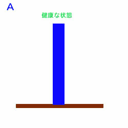

|
スマートフォン用サイトです
ＰＣの方はこちらをご覧下さい。
携帯の方はこちらをご覧ください。
|
漢方では「未病を治す」という言葉が有名です。 |
|  |
| 健康な状態を地面に対して直角に立っている「棒」だと思ってください。 |
|
| この「棒」が何らかの原因（食生活や生活習慣・生まれ持った体質など）で傾きます。しかし、少しぐらい傾いたぐらいでは、何ら自覚症状もなく自分で は全く気が付きません。この傾きがひどくなってくると、「肌があれる」とか「風邪が治りにくくなった」とか、日頃から健康に敏感な人は身体の異変に気が付 いてきます。いろいろなサプリメントに手を出されるのも、多くの人はこの時期だと思います。 |
 |
| 「棒」がどんどん傾いて限界を超すと、大きな病気を発病したり突然症状が出てきたりします。 「未病を治す」と言うのは、少し傾いた状態の時、真っ直ぐな状態に近づけるように漢方薬を使って崩れたバランスを補正します。ひどく傾いた状態になると元へ戻すのにも時間もお金もかかります。その上、病気の症状で辛いのは”自分持ち”ですから・・・。 傾いた「棒」を転かすのは簡単ですが、転けた「棒」を持ち上げるのは大変です。 |
| ★当店でご相談 但し、真剣に治そうと思って居られる方のみ、返信させて頂きます。 また「指定受信」など、迷惑メールを防止するため設定を解除の上で、メールをお送り下さい。 |


(C) Copyright 2011 Kanpo no SEISINDO. All rights reserved.